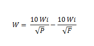

A potência requerida para moer um determinado material pode ser estimada aplicando-se a equação devida a
BOND:

Onde:
W = Consumo de potência expressa em kWh/t curtas. Para obter o consumo de potência em kWh/t métrica,
multiplicar o valor obtido por 1,102. Wi = "Work index" o valor desta variavel sempre será remetido a toneladas curtas, ou seja, 908kg. **Verificar , no entanto, antes de aplicar a fórmula e converter caso necessário.** P = Tamanho em micra da abertura da peneira na qual "passa" 80% do produto final moído. F = Tamanho em micra de abertura de peneira na qual "passa" 80% de alimentação do moinho.
Esta equação de BOND fornece o consumo de energia W em kilowatts-hora por tonelada curta para moagem por via
úmida num moinho que tenha diâmetro interno de 8 pés(2438 mm).
A fórmula é válida para moinhos de barras, se operarem em circuito aberto e para moinhos de bolas, em
circuito fechado.
Para obter os valores de consumo de potência relativos a outras condições de trabalho diferentes das
consideradas acima, o valor W deverá ser multiplicado pelos fatores de eficiência EF aplicavéis ao caso em
consideração.